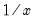

@inv Element Functions Reciprocal function. Syntax: @inv(x) x: number, series Return: number, series Returns  of the scalar , or of each value of in the series. For scalars and series only. To obtain the reciprocals of the elements of a matrix object use @einv. For matrix inversion, see @inverse. Examples show @inv(x) returns a linked series whose elements are the reciprocal of those in the series x. Cross-references See also @einv, @emult, and @ediv.


 , or
, or  of each value of
of each value of  in the series.
in the series.